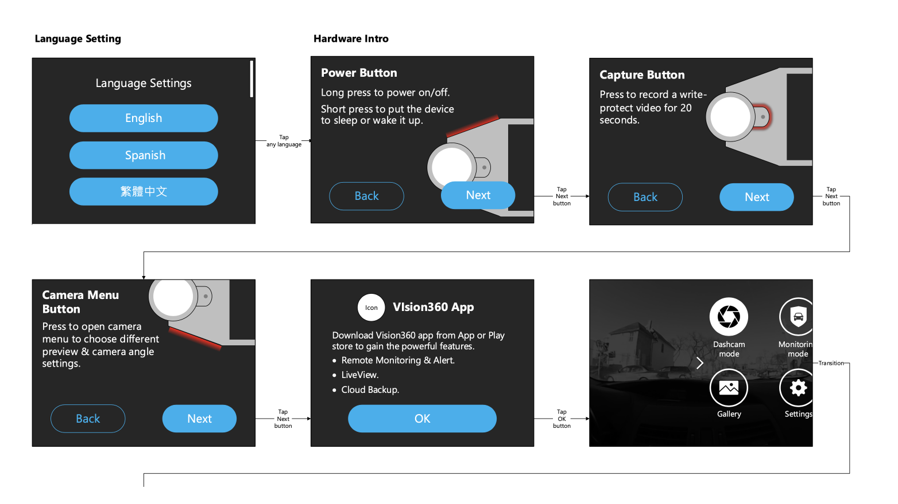

消費電子
IoT
新創產品
iF Design Award
Vision360 雲端行車紀錄器
360度無死角的行車安全守護者，整合全景攝影、雲端備份與智能防盜
iF Award
德國 iF Design Award 2018
360°
全方位無死角記錄

傳統行車紀錄器的四大市場痛點
在2018年的行車紀錄器市場中，BD團隊發現傳統產品存在諸多限制，無法滿足現代駕駛者的需求。
視角限制
多數產品缺乏完整的360度視角，無法全面記錄車輛周圍環境，容易錯過關鍵事件。
雲端整合不足
雲端備份功能不普及，重要影片可能因儲存空間不足而遺失。
防盜功能薄弱
防盜功能整合度低，無法提供即時追蹤與通知。
使用體驗不佳
使用者介面複雜，學習曲線高，影響產品使用意願。
三個核心解決方案的互動設計
1
360度錄影模式
當車輛發動時，系統自動進入預設模式，全方位紀錄行車過程。
自動錄影

- 車輛啟動後，自動開始360度錄影
視角切換

- 可透過選單切換不同視角
- 也可透過 double tap 手勢快速切換
2
連網智能功能
車機聯網後，可以提供更多智能服務。
車輛追蹤

- 離開車子後，透過 App 查詢車輛位置
雲端備份

- 事件發生後自動備份影片至雲端
- 車主可馬上查看而不用插拔記憶卡
即時監看

- 如果防盜功能偵測到異常，可以直接查看 LiveView
3
情境設計（Contextual Design）
根據使用者的當前情境或任務顯示相關內容或功能，避免不必要的干擾。
引導教學

- 第一次使用時提供使用教學
情境模式

- 根據使用情境，自訂觸發對應的系統模式（行車模式、防盜模式）
獲得國際肯定，同時累積寶貴的產品洞察
專案終止與設計反思
由於專案涉及多個複雜系統的整合，包括360度全景攝影、4G LTE通訊、雲端儲存、GPS定位等，開發團隊在短時間內無法有效整合這些技術，導致專案在完成雛形後被迫終止。
這段經歷讓我深刻意識到：設計師在開發過程中，應該要有勇氣主動與 PM 討論產品進度與範疇風險，而非一味配合決策、迴避衝突。如果當初團隊能建立更開放的溝通文化，讓每個人都敢於提出疑慮，也許這個產品真的有機會走到上線那一天。
Next Case Study
政府 · 醫療資訊系統
校園疫苗接種數位轉型